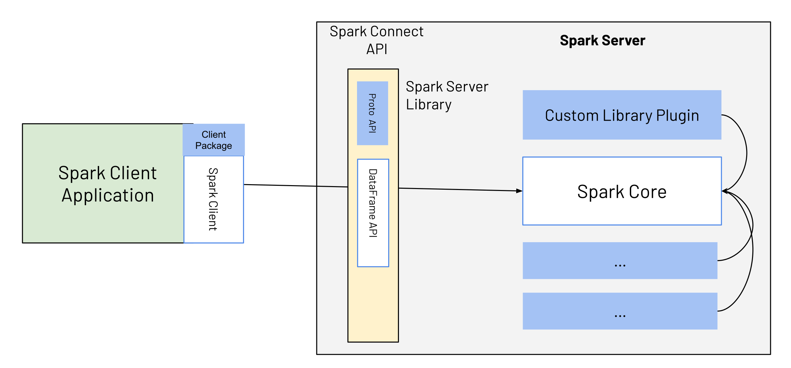
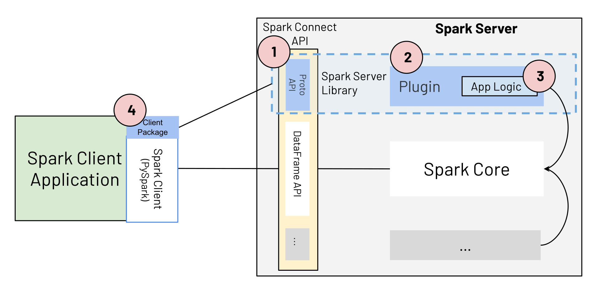

Application Development with Spark Connect
Spark Connect Overview
In Apache Spark 3.4, Spark Connect introduced a decoupled client-server architecture that allows remote connectivity to Spark clusters using the DataFrame API and unresolved logical plans as the protocol. The separation between client and server allows Spark and its open ecosystem to be leveraged from everywhere. It can be embedded in modern data applications, in IDEs, Notebooks and programming languages.
To learn more about Spark Connect, see Spark Connect Overview.
Redefining Spark Applications using Spark Connect
With its decoupled client-server architecture, Spark Connect simplifies how Spark Applications are developed. The notion of Spark Client Applications and Spark Server Libraries are introduced as follows:
- Spark Client Applications are regular Spark applications that use Spark and its rich ecosystem for distributed data processing. Examples include ETL pipelines, data preparation, and model training and inference.
- Spark Server Libraries build on, extend, and complement Spark’s functionality, e.g. MLlib (distributed ML libraries that use Spark’s powerful distributed processing). Spark Connect can be extended to expose client-side interfaces for Spark Server Libraries.
With Spark 3.4 and Spark Connect, the development of Spark Client Applications is simplified, and clear extension points and guidelines are provided on how to build Spark Server Libraries, making it easy for both types of applications to evolve alongside Spark. As illustrated in Fig.1, Spark Client applications connect to Spark using the Spark Connect API, which is essentially the DataFrame API and fully declarative.

Spark Server Libraries extend Spark. They typically provide additional server-side logic integrated with Spark, which is exposed to client applications as part of the Spark Connect API, using Spark Connect extension points. For example, the Spark Server Library consists of custom service-side logic (as indicated by the blue box labeled Custom Library Plugin), which is exposed to the client via the blue box as part of the Spark Connect API. The client uses this API, e.g., alongside PySpark or the Spark Scala client, making it easy for Spark client applications to work with the custom logic/library.
Spark API Mode: Spark Client and Spark Classic
Spark provides the API mode, spark.api.mode configuration, enabling Spark Classic applications
to seamlessly switch to Spark Connect. Depending on the value of spark.api.mode, the application
can run in either Spark Classic or Spark Connect mode. Here is an example:
from pyspark.sql import SparkSession
SparkSession.builder.config("spark.api.mode", "connect").master("...").getOrCreate()You can also apply this configuration to both Scala and PySpark applications when submitting yours:
spark-submit --master "..." --conf spark.api.mode=connectAdditionally, Spark Connect offers convenient options for local testing. By setting spark.remote
to local[...] or local-cluster[...], you can start a local Spark Connect server and access a Spark
Connect session.
This is similar to using --conf spark.api.mode=connect with --master .... However, note that
spark.remote and --remote are limited to local* values, while --conf spark.api.mode=connect
with --master ... supports additional cluster URLs, such as spark://, for broader compatibility with
Spark Classic.
Spark Client Applications
Spark Client Applications are the regular Spark applications that Spark users develop today, e.g., ETL pipelines, data preparation, or model training or inference. These are typically built using Sparks declarative DataFrame and DataSet APIs. With Spark Connect, the core behaviour remains the same, but there are a few differences:
- Lower-level, non-declarative APIs (RDDs) can no longer be directly used from Spark Client applications. Alternatives for missing RDD functionality are provided as part of the higher-level DataFrame API.
- Client applications no longer have direct access to the Spark driver JVM; they are fully separated from the server.
Client applications based on Spark Connect can be submitted in the same way as any previous job. In addition, Spark Client Applications based on Spark Connect have several benefits compared to classic Spark applications using earlier Spark versions (3.4 and below):
- Upgradability: Upgrading to new Spark Server versions is seamless, as the Spark Connect API abstracts any changes/improvements on the server side. Client- and server APIs are cleanly separated.
- Simplicity: The number of APIs exposed to the user is reduced from 3 to 2. The Spark Connect API is fully declarative and consequently easy to learn for new users familiar with SQL.
- Stability: When using Spark Connect, the client applications no longer run on the Spark driver and, therefore don’t cause and are not affected by any instability on the server.
- Remote connectivity: The decoupled architecture allows remote connectivity to Spark beyond SQL and JDBC: any application can now interactively use Spark “as a service”.
- Backwards compatibility: The Spark Connect API is code-compatible with earlier Spark versions, except for the usage of RDDs, for which a list of alternative APIs is provided in Spark Connect.
Spark Server Libraries
Until Spark 3.4, extensions to Spark (e.g., Spark ML or Spark-NLP) were built and deployed like Spark Client Applications. With Spark 3.4 and Spark Connect, explicit extension points are offered to extend Spark via Spark Server Libraries. These extension points provide functionality that can be exposed to a client, which differs from existing extension points in Spark such as SparkSession extensions or Spark Plugins.
Getting Started: Extending Spark with Spark Server Libraries
Spark Connect is available and supports PySpark and Scala applications. We will walk through how to run an Apache Spark server with Spark Connect and connect to it from a client application using the Spark Connect client library.
A Spark Server Library consists of the following components, illustrated in Fig. 2:
- The Spark Connect protocol extension (blue box Proto API)
- A Spark Connect Plugin.
- The application logic that extends Spark.
- The client package that exposes the Spark Server Library application logic to the Spark Client Application, alongside PySpark or the Scala Spark Client.

(1) Spark Connect Protocol Extension
To extend Spark with a new Spark Server Library, developers can extend the three main operation types in the Spark Connect protocol: Relation, Expression, and Command.
message Relation {
oneof rel_type {
Read read = 1;
// ...
google.protobuf.Any extension = 998;
}
}
message Expression {
oneof expr_type {
Literal literal = 1;
// ...
google.protobuf.Any extension = 999;
}
}
message Command {
oneof command_type {
WriteCommand write_command = 1;
// ...
google.protobuf.Any extension = 999;
}
} Their extension fields allow serializing arbitrary protobuf messages as part of the Spark Connect protocol. These messages represent the parameters or state of the extension implementation. To build a custom expression type, the developer first defines the custom protobuf definition of the expression.
message ExamplePluginExpression {
Expression child = 1;
string custom_field = 2;
}(2) Spark Connect Plugin implementation with (3) custom application logic
As a next step, the developer implements the ExpressionPlugin class of Spark Connect with custom application logic based on the input parameters of the protobuf message.
class ExampleExpressionPlugin extends ExpressionPlugin {
override def transform(
relation: protobuf.Any,
planner: SparkConnectPlanner): Option[Expression] = {
// Check if the serialized value of protobuf.Any matches the type
// of our example expression.
if (!relation.is(classOf[proto.ExamplePluginExpression])) {
return None
}
val exp = relation.unpack(classOf[proto.ExamplePluginExpression])
Some(Alias(planner.transformExpression(
exp.getChild), exp.getCustomField)(explicitMetadata = None))
}
}Once the application logic is developed, the code must be packaged as a jar and Spark must be configured to pick up the additional logic. The relevant Spark configuration options are:
- spark.jars which define the location of the Jar file containing the application logic built for the custom expression.
- spark.connect.extensions.expression.classes specifying the full class name of each expression extension loaded by Spark. Based on these configuration options, Spark will load the values at startup and make them available for processing.
(4) Spark Server Library Client Package
Once the server component is deployed, any client can use it with the right protobuf messages. In the example above, the following message payload sent to the Spark Connect endpoint would be enough to trigger the extension mechanism.
{
"project": {
"input": {
"sql": {
"query": "select * from samples.nyctaxi.trips"
}
},
"expressions": [
{
"extension": {
"typeUrl": "type.googleapis.com/spark.connect.ExamplePluginExpression",
"value": "\n\006\022\004\n\002id\022\006testval"
}
}
]
}
} To make the example available in Python, the application developer provides a Python library that wraps the new expression and embeds it into PySpark. The easiest way to provide a function for any expression is to take a PySpark column instance as an argument and return a new Column instance with the expression applied.
from pyspark.sql.connect.column import Expression
import pyspark.sql.connect.proto as proto
from myxample.proto import ExamplePluginExpression
# Internal class that satisfies the interface by the Python client
# of Spark Connect to generate the protobuf representation from
# an instance of the expression.
class ExampleExpression(Expression):
def to_plan(self, session) -> proto.Expression:
fun = proto.Expression()
plugin = ExamplePluginExpression()
plugin.child.literal.long = 10
plugin.custom_field = "example"
fun.extension.Pack(plugin)
return fun
# Defining the function to be used from the consumers.
def example_expression(col: Column) -> Column:
return Column(ExampleExpression())
# Using the expression in the Spark Connect client code.
df = spark.read.table("samples.nyctaxi.trips")
df.select(example_expression(df["fare_amount"])).collect()